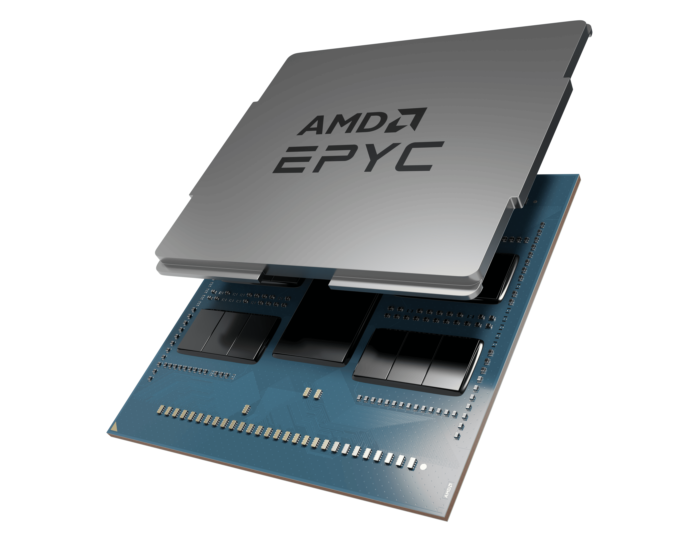

İşlemci
Bilgisayar dünyasında en kritik bileşenlerden biri olan işlemci (CPU - Central Processing Unit), tüm sistemin beyni olarak çalışır. İşlemci, bilgisayarın tüm veri işleme, hesaplama ve komut yürütme görevlerini üstlenir. Bir insan vücudunu düşünürsek, işlemci beyin gibi çalışır ve tüm bileşenleri kontrol ederek onların birbiriyle uyumlu çalışmasını sağlar. Modern işlemciler, hız, çoklu çekirdek desteği, enerji verimliliği ve yapay zeka optimizasyonları gibi birçok özelliğe sahiptir. Günümüzde Intel ve AMD en büyük iki işlemci üreticisidir ve bu markalar sürekli olarak işlemci performanslarını artırmak için yenilikçi teknolojiler geliştirmektedir.
İŞLEMCİ NASIL ÇALIŞIR?
Bir işlemci, bilgisayarın çalışmasını sağlayan sayısız matematiksel
işlem ve mantıksal komutu saniyeler içinde gerçekleştirir.
İşlemcinin temel çalışma prensibi şu şekildedir:
1️⃣ Komut Alma (Fetch): İşlemci, RAM'den bir komut alır.
2️⃣ Komutu Çözme (Decode): Alınan komut, işlemcinin anlayacağ şekilde
yorumlanır.
3️⃣ Çalıştırma (Execute): Komut çalıştırılır ve gerekli hesaplamalar
yapılır.
4️⃣ Sonuç Depolama (Writeback): İşlem tamamlandıktan sonra sonuç
RAM’e veya ilgili bileşene iletilir.
Bu döngü milyarlarca kez tekrar eder ve bilgisayarın sorunsuz
çalışmasını sağlar. İşlemcinin hızı, bu döngüyü ne kadar hızlı
tamamlayabildiğine bağlıdır.
İŞLEMCİNİN TEMEL BİLEŞENLERİ
1️⃣ Çekirdek Sayısı (Cores)
Günümüz işlemcileri artık çok çekirdekli (multi-core) olarak üretilmektedir. Çekirdekler, aynı anda birden fazla işlemi yürütmeye yardımcı olur.
2️⃣ Saat Hızı (Clock Speed - GHz)
Saat hızı, işlemcinin bir saniyede kaç işlem yapabildiğini gösterir ve GHz (Gigahertz) cinsinden ölçülür.
3️⃣ Önbellek (Cache)
Önbellek, işlemcinin sık kullanılan verilere hızla erişmesini sağlayan geçici bellek alanıdır. Üç farklı önbellek türü vardır:
4️⃣ İş Parçacıkları (Threads) ve Hyper-Threading
İşlemciler, her çekirdeği sanal olarak ikiye bölebilir ve aynı anda iki işlemi çalıştırabilir.
İŞLEMCİ SEÇERKEN DİKKAT EDİLMESİ GEREKENLER
Bir işlemci seçerken şu faktörlere dikkat etmelisin:
✔ Kullanım Amacın:
✔ Uyumluluk:
✔ Soğutma ve Güç Tüketimi:
✔ Fiyat-Performans Dengesi: